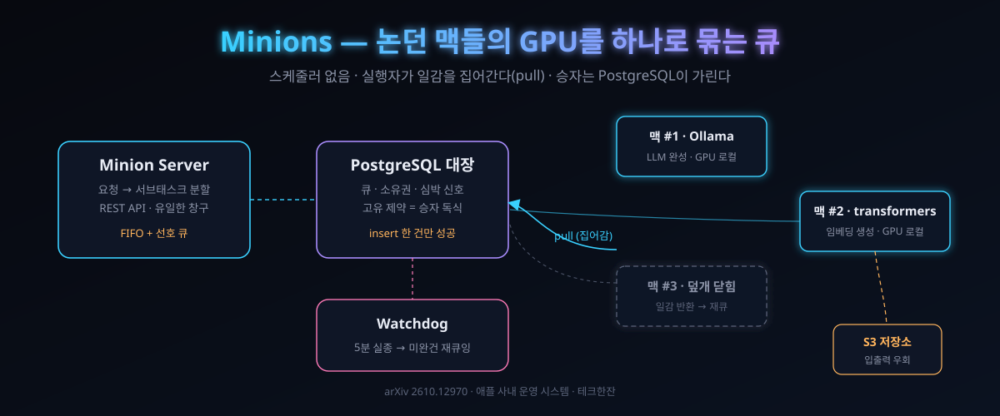

10/9 arXiv 3쪽 논문 — 애플이 논던 직원 맥 수천 대의 GPU로 추론 클러스터를 조립하는 부품 5개

세 줄 요약. ① 애플 머신러닝 연구팀이 10월 9일(미국 시각) arXiv에 논문 한 장을 올렸다. 제목은 Minions — 사내 어딘가에서 대기 중인 애플실리콘 맥의 논 GPU를 모아 추론 전용 '가상 GPU 클라우드'로 쓰는 시스템의 설계도다. ② 발상은 거꾸로다. 서버가 일감을 배정하는 대신 각 맥에 상주하는 실행자가 "내 일감 있나?"를 직접 물어본다. 여러 대가 같은 건을 노리면 PostgreSQL 테이블의 고유 제약이 승자 한 대만 남긴다. 스케줄러도 분산 조정 서비스도 통째로 사라진다. ③ 10월 13일 새벽(한국 시각) 해커뉴스에 올라 218표를 받았고, 댓글 상당수는 "이건 AI 이야기가 아니라 배치 컴퓨팅의 고전 이야기"라는 지점을 정확히 찔렀다. 오늘은 논문이 공개한 부품 5개를 그대로 뜯고, 같은 설계를 우리 맥에서 조립하는 절차까지 따라간다.
논문의 저자는 Jianhua Li 등 애플 소속 6인(모두 apple.com 메일 도메인). 대상 워크로드는 생성형 AI의 '생성'이 아니라 임베딩과 일괄 생성처럼 독립 작업이 수백만 개 쌓이는 유형이다. 이 구분이 오늘 글 전체의 열쇠다 — 이 시스템은 하나의 거대한 모델을 여러 맥에 쪼개 얹는 물건이 절대 아니다.
30초 요약
| 항목 | 내용 |
|---|---|
| 무슨 일 | 2026-10-09 제출 arXiv 2610.12970(3쪽), 10-12 애플 ML 리서치 페이지 게재. 애플이 사내 다수 팀에서 이미 운영 중인 분산 추론 플랫폼 Minions의 설계 공개. 10-13 HN 게재, 218표·94개 댓글 |
| 왜 만들었나 | 중앙 GPU 클러스터는 비싸고, 늘리고 싶을 때 즉시 늘려지지 않고, 대기가 길다. 반면 엔지니어 책상의 맥은 고성능 GPU를 태운 채 하루 대부분 논다. 이 두 개의 불일치를 한 큐로 잇는 것이 목표 |
| 구조(5개 부품) | ① Minion Server — 웹 화면과 REST API로 요청을 받아 서브태스크로 쪼갠 뒤 큐에 넣는 유일한 창구 ② PostgreSQL — 메타데이터·큐·심박 신호를 담는 단일 대장 ③ Minion Executor — 각 맥에 상주하며 일감을 집어가고 로컬 GPU로 돌리고 결과를 올리는 실행자 ④ Minion Watchdog — 심박 실종을 탐지해 미완건을 큐로 되돌리는 회수자 ⑤ 오브젝트 저장소(S3) — 입출력 대용량이 서버 배를 타지 않게 우회 |
| 두 가지 작업 | 임베딩 생성: HuggingFace transformers API를 Apple Silicon GPU에서 직접 실행. LLM 완성: 각 맥에 설치된 Ollama의 로컬 API를 호출(원격 API 호출 없음). 모델은 최초 실행 시 받아 로컬에 캐시 |
| 결함 안전장치 | 실행자는 5분마다 심박 신호를 남기고, 워치독은 '일감은 쥐었는데 신호가 끊긴' 기기만 감시해 해당 서브태스크를 큐로 되돌린다. 노트북 덮개·수면·퇴근·네트워크 끊김을 전부 정상 시나리오로 전제 |
| 핵심 주의 | 결과는 정성표뿐 — "GPU 대기가 10시간 넘던 게 분 단위로", "새 GPU 신청 0건", "인프라 비용 0". 스루풋·지연·장치 수·칩 기종·클라우드 대비 비용 측정치가 하나도 없다. 추론 전용(분산 학습은 'future work'), 그리고 사내 시스템이라 코드 공개 링크가 없다 |
1. 무엇이 터졌나
사건을 연대순으로 놓는다. 10월 9일, arXiv에 3쪽짜리 논문이 등록됐다. 저자란은 전원 애플 소속이고, 논문에 실린 메일 주소는 전부 사내 도메인(apple.com)이었다. 10월 12일, 애플의 ML 리서치 페이지(machinelearning.apple.com/research)에 초록과 필자 목록이 섹션 단위로 정리돼 실렸다. 10월 13일 새벽(한국 시각), 해커뉴스 'Show'도 아닌 일반 스토리로 올라 218표를 모았고, 링크는 애플 리서치 페이지였다. 이차 보도는 10월 13일경 영국 테크 매체의 기사 제목이 상황을 압축한다 — "Apple unleashes a swarm of Mac Minions to share GPU resources for large AI tasks".
내용물의 정체를 한 문단으로. Minions는 애플 내부의 '범용 추론 심부름센터'다. 어떤 팀이든 웹 UI나 API로 작업을 밀어넣으면, 서버가 그걸 쪼개고, 사내 어딘가에서 대기 중인 맥들이 집어가서, 결과를 S3에 쌓는다. 애플이라는 회사가 가진 특수 자산을 정면으로 노린다 — 엔지니어 대다수가 M 시리즈 맥을 쓰고, 그 GPU는 코드 빌드와 브라우저 사이에서 대부분 논다. 논문은 이 잉여 용량을 '추가 하드웨어 구입 없이' 끌어다 쓰는 게 설계의 중심 질문이라고 적는다.
그리고 이 글의 독자를 향한 진짜 뉴스는 마지막 문장에 있다. 시스템은 미래의 제안이 아니라 "다수 팀의 워크로드를 이미 지원해 왔다"는 운영 경험담 형식으로 쓰였다. 즉 애플은 이미 이 방식으로 일하고 있고, 공개한 건 3쪽짜리 회고록 겸 설계 노트다.
2. 왜 대단한가
① 스케줄러가 없는 게 스케줄러다
분산 클러스터라고 하면 '어느 기계가 무엇을 할지' 정해주는 두목이 있어야 한다고 생각한다. Minions는 그 두목을 통째로 없앴다. 실행자 각자가 주기적으로 서버를 기웃거리며 자기 조건에 맞는 서브태스크를 집어간다 — 밀어주는(push) 게 아니라 집어가는(pull) 모델이다. 이 방향을 고른 이유를 논문은 노골하게 적시한다 — 개인 기기는 언제든 꺼지므로, 살아있음을 추적하는 비용 자체가 제거 대상이다. 여기에 실용적 부작용 하나가 덤으로 따라온다. 실행자는 '내 팀·내 프로젝트·내 작업 이름'을 선호로 묶어 둘 수 있어서, 전역 큐가 막혀 있어도 특정 동료의 일감은 먼저 주워간다. 내 맥을 특정 프로젝트에 확약해주는 이 기능은, 신뢰 문제와 정치 문제를 코드로 푼 디자인이다.
② '승자 독식'을 데이터베이스 한 칸이 한다
두 대의 맥이 같은 서브태스크를 동시에 집으면? 이 고전 문제에 대한 Minions의 답은 분산 조정 서비스를 한 벌 더 사는 게 아니라 테이블 하나다. (팀, 프로젝트, 작업 이름, 서브태스크 ID) 조합에 고유 제약을 걸고, 실행자는 '내가 이 일을 갖는다'는 소유 행을 삽입(insert)으로 시도한다. PostgreSQL이 보장은 하나 — 성공은 최대 한 건, 나머지는 충돌로 튕겨 나간다. 진 쪽은 조용히 다음 건으로 이동한다. 이 '데이터베이스를 잠금장치로 쓰기'는 시스템 엔지니어링에서는 오래된 손기술이지만, LLM 추론이라는 2026년의 옷을 입고도 여전히 가장 값싼 정답이라는 걸 3쪽이 증명한다.
③ 추론이 '배치'로 쪼개지는 순간, 맥은 쓸 만한 기계가 된다
이 시스템이 다루는 두 작업(임베딩·LLM 완성)에는 공통점이 있다 — 각 건이 서로 독립이고, 건 하나만 맥 한 대에 들어가면 된다. 문서 100만 건의 임베딩은 100만 개의 작은 일이지, 거대한 일 하나가 아니다. 그래서 대역폭·지연시간 같은 분산의 지뢰밭을 안 밟는다. 모델 쪼개기(텐서 병렬)와 큐 기반 병렬은 같은 '분산'이라는 단어의 전혀 다른 문제다 — 후자는 기기가 죽어도 그 건만 다시 큐에 넣으면 끝이고, 전자는 노드 실종이 모델 전체의 재기동을 의미한다. Minions는 애초에 전자를 버림으로써 불안정한 개인 기기라는 환경을 '정상 케이스'로 만들었다. 논문이 스스로를 배치 진영에 서 있다고 못 박는 이유다.
3. 바로 써먹기
Minions 자체는 사내 시스템이라 코드 링크가 없다. 대신 설계에 쓰인 부품은 전부 공공재다 — PostgreSQL, REST, S3 호환 저장소, 그리고 애플 GPU. 논문이 '따라 할 수 있게' 만든 구조는 아니지만, 조립 순서를 그대로 옮기면 Minions와 같은 모양의 1인용 클러스터가 나온다. 우리 환경(여유 맥 2~3대) 기준으로 붙여 쓴다.
create table subtask(id bigint generated always as identity primary key,
team text, project text, task text, payload jsonb, state text default 'queued');
create table claim(task_id bigint, executor text,
primary key(task_id, executor)); -- 승자 독식: 충돌한 실행자는 탈락
create table heartbeat(executor text primary key, ts timestamptz);이 스키마에서 claim 테이블의 기본키가 논문의 그 제약이다. 서브태스크 ID로 insert를 시도하면 첫 번째 실행자만 성공하고, 같은 조합을 다시 넣은 실행자는 충돌 에러를 받는다. 예외를 '졌으니 다음 건'으로 처리하는 한 줄이 곧 로직이다.
while True:
t = q("select * from subtask where state='queued'
and (pref is null or pref=me) limit 1")
if not t: sleep(15); continue
if claim(t.id, ME): t → 실행 → S3 업로드 → state='done'
# Ollama가 깔린 맥이라면 LLM 완성은 이 호출 한 번
curl http://localhost:11434/api/generate -d '{"model":"qwen3:8b","prompt":"..."}'
# 워치독 — 5분 실종 = 회수
update subtask set state='queued' where executor in
(select executor from heartbeat where ts < now() - interval '5 min');설계 검증용으로 이미 돌아가는 오픈소스 제품과 대조하면 편하다. 큐 쪽은 Redis Streams나 Postgres 기반 워커(Que·Solid Queue 류)가 'claim = UPDATE ... FOR UPDATE SKIP LOCKED'만 쓰면 같은 규칙이고, 실행자 쪽은 llama.cpp RPC 백엔드(10/13 '폰 두 대 클러스터' 편에서 다룬 그 부품)가 pull 대신 push 배정이라는 차이만 가진 형제다. Minions가 push를 버린 이유(기기 수명 주기가 예측 불가)를 명심하면, llama.cpp로 이미 클러스터를 굴리는 사람도 배정 테이블을 추가해 같은 모양으로 바꿀 수 있다.
그리고 이 글을 읽을 우리 환경에 대응표를 하나 얹는다. 애플 리서치 페이지에 적힌 두 워크로드를 우리 96GB M3 Ultra에 그대로 얹으면 — 임베딩은 transformers의 Metal 가속(MPS) 경로, LLM은 Ollama의 기본 엔진(llama.cpp) 경로다. 즉 Minions의 실행자 한 대분은 'transformers + Ollama가 깔린 맥'이면 되고, 남은 건 위 4개 SQL 문과 폴링 루프뿐이다. 논문의 중앙 클러스터와의 차이는 오직 하나, 그 맥들이 남의 책상이냐 내 책상이냐다.
4. 해외 반응 쟁점
HN 댓글 94개의 정서는 감탄이 아니라 기시감이었다. 쟁점 세 갈래로 정리한다.
① "이거 30년 전에도 했다"
가장 많이 울린 목소리는 세대 기억이었다. 한 댓글은 90년대에 이미 엔지니어 책상 아래 놓인 워크스테이션을 잔업무 배치로 굴리던 시절을 소환했고, 다른 댓글은 같은 취지의 유닉스 계열 분산 환경을 떠올렸다. 구체 이름도 나왔다 — 1988년 위스콘신대에서 태어난 배치 스케줄러 Condor다. 지금도 유지되는 이 오픈소스의 참고 문서까지 인용된 반면, "Condor가 있으니 새롭지 않다"는 논평과 "그래도 이 단순함이 미덕"이라는 반론이 교차했다. 여기에 "애플은 2005년부터 분산 인코딩을 갖고 있다"는 반박성 증언도 붙었다. 총평은 한 문장으로 수렴한다: 아이디어는 헌 것이 맞고, 다만 '애플이 자기 직원 맥으로' 한 게 뉴스라는 것.
② SETI@home 아냐?
"전용 페이지만 보면 AI 버전의 SETI@home(놀던 PC를 우주 신호 분석에 빌려주던 90년대 프로젝트) 같다"는 질문이 대표적으로 올랐고, 이에 대한 정정 댓글이 논문보다 정확하게 구조를 설명했다 — Minions는 하나의 모델을 여러 GPU에 쪼개 얹는 게 아니라, 독립 서브태스크를 여러 기기에 나누는 것이다. 예: 문서 100만 건 임베딩. 즉 '모델 병렬'이 아니라 '데이터 병렬'이고, 그래서 네트워크가 느려도 산다.
③ "진짜 뉴스는 애플의 조직 선택"
세 번째 갈래는 하드웨어 정치로 흘렀다. "수천 대의 ARM 워크스테이션을 이미 갖고 있으면서, 왜 이걸 바깥에 빌려줄 공급망으로 안 키우나"라는 지적부터, "TSMC·삼성 외 길은 없고, 10년 미만 스케일로는 무리"라는 반론까지. 이 스레드는 Minions와 별개로 애플 실리콘 클라우드의 미래를 논한 것이라 기사 본론과는 갈리지만, 댓글 상당수가 이 방향에 몰렸다. 즉 커뮤니티는 논문의 기술보다 '사내에 이미 존재하는 잉여'라는 전제를 부러워한 쪽에 가깝다.
5. 마시기 전 주의
① '비용 제로'는 회계다, 물리가 아니다 — 3쪽짜리의 정성표는 "인프라 비용: 높음 → 0"이라 쓴다. 남의 책상 위 전기세, 배터리 사이클, 기기 주인이 중도에 회수할 리스크는 0이 아니다. 이 항목은 '새로 사는 GPU가 0'으로 읽어야 정확하다.
② 데이터는 남의 노트북에 간다 — 논문은 기밀성을 명시적 한계로 적고, 팀별 전용 데이터베이스와 격리 실행자 풀로 완화했다고만 한다. 인증·암호화·위협 모델에 대한 문장은 없다. 사내 문서 임베딩을 동료가 들고 집에 간 맥에서 돌리는 그림을 각오할 수 있어야 한다.
③ 5분 심장은 배치를 위한 것 — 심박 신호가 5분 주기라는 건, 죽은 기기의 일감을 되찾기까지 최대 5분이 걸린다는 뜻이다. 대화형 서빙에는 애초에 안 어울리는 물건이고, 논문도 그렇게 스스로를 배치 진영에 둔다.
④ 측정값 없는 3쪽 — 대기가 10시간에서 분으로 줄었다는 서술은 저자 경험의 요약이지 측정 결과가 아니다. 처리량 곡선, 지연시간 수치, 장치 수, 기종, 모델 크기가 전부 생략돼 있다. 외부 기사들도 이 점을 '정성적'으로 딱 잘라 불렀다. 이 논문을 근거로 클라우드 GPU 해고를 주장하면 안 되고, "이런 구조로 잉여는 실제로 건진다"는 존재 증명으로만 써야 한다.
바로 가기
같이 읽기
- 폰 두 대를 RPC로 묶은 27B 실측기 — 같은 '분산'이라도 모델 쪼개기를 한 쪽
- 책상 위 자원으로 프론티어급을 얹는 사람들의 계보
- 한 대 안에서 층을 쪼개는 법 — 클러스터 없이 용량을 이기는 형제 기술